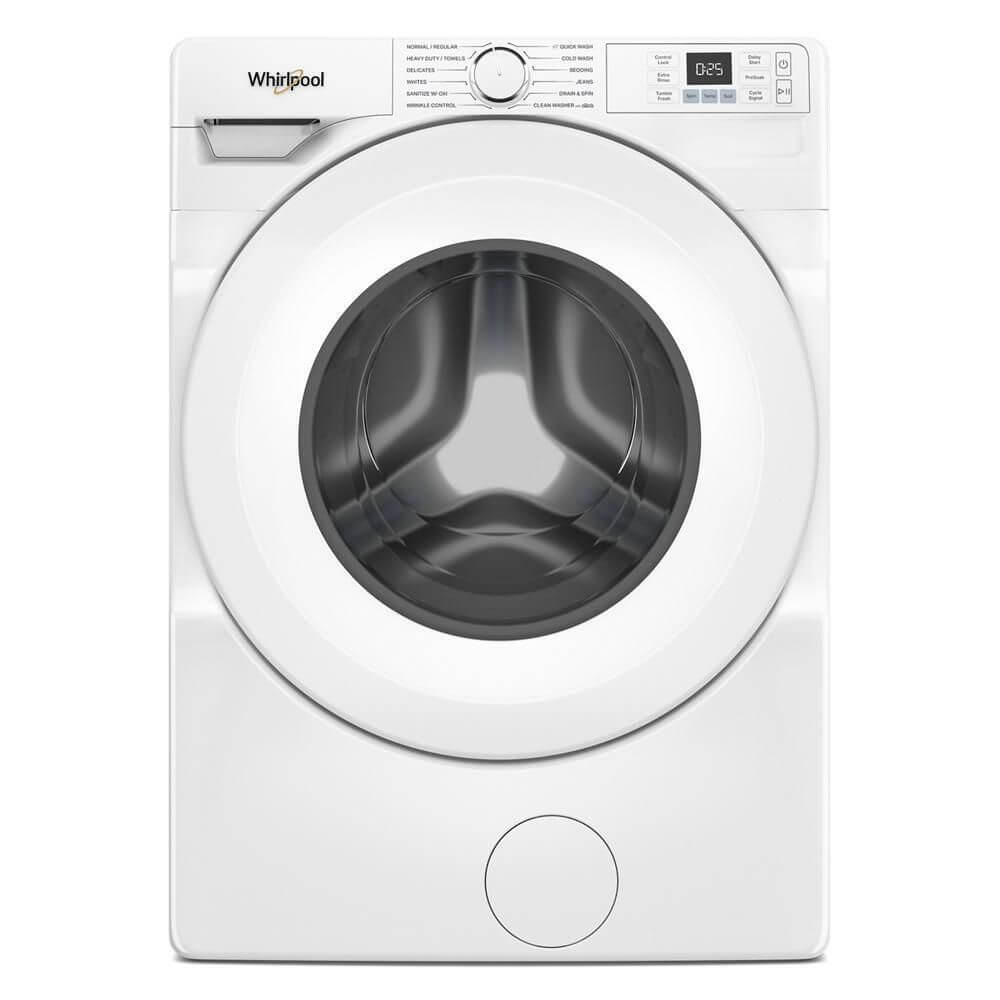

Whirlpool Appliance Repairs in Cape Town
Gumption Solutions are Cape Town's trusted Whirlpool appliance repair specialists. Whether your Whirlpool fridge is not cooling, your Whirlpool washing machine is not spinning, your Whirlpool dishwasher is leaking, or your Whirlpool tumble dryer has stopped heating , our certified technicians diagnose and fix all Whirlpool appliances fast, often the same day.


Certified Whirlpool appliance repairs across Cape Town
Whirlpool is a globally established appliance brand with a strong presence in South African homes. Whirlpool washing machines, fridges, dishwashers, and tumble dryers are known for their 6th Sense technology and reliability. When your Whirlpool appliance develops a fault, Gumption Solutions provides fast, expert repairs across Cape Town.
Our technicians are experienced with Whirlpool's 6th Sense technology, Whirlpool inverter motors, and the full range of Whirlpool appliances available in South Africa. We carry Whirlpool-compatible spare parts and complete most repairs on the first visit.
We cover all Cape Town suburbs , Northern Suburbs, Southern Suburbs, the Winelands, and the City Bowl. Same-day Whirlpool appliance repair is available when you call before 11am.
Book your Whirlpool repair
Tell us about your Whirlpool appliance and the problem. We'll get back to you within 30 minutes. Prefer WhatsApp? Message us here.
- Same-day service available
- All Whirlpool models repaired
- 6-month warranty on all repairs
- Upfront quote, no surprises
Whirlpool appliances we repair in Cape Town
Every Whirlpool appliance, every fault. Same-day service available across Cape Town.

Whirlpool Refrigerator Repairs
Our certified Cape Town technicians are experienced with Whirlpool refrigerator faults, error codes, and component replacements. We carry Whirlpool-compatible spare parts on every vehicle and complete most Whirlpool refrigerator repairs on the first visit across all Cape Town suburbs.
Whether your Whirlpool refrigerator is displaying an error code, has stopped working altogether, or is making unusual sounds, Gumption Solutions will diagnose the fault correctly and provide a transparent quote before any work begins. Every Whirlpool refrigerator repair is backed by our 6-month warranty.
Common Whirlpool refrigerator problems we fix:
- Whirlpool fridge not keeping food cold enough , internal temperature too high
- Frost accumulating in the Whirlpool freezer compartment and not clearing naturally
- Water leaking from the Whirlpool fridge onto the kitchen floor
- Whirlpool fridge compressor fault , not running or failing to maintain effective cooling
- Whirlpool 6th Sense technology not responding correctly to temperature changes
- Whirlpool fridge thermostat or control board fault , temperature not being regulated
- Whirlpool fridge door seal worn or damaged , allowing warm air inside the refrigerator
- Refrigerant leak , Whirlpool fridge requires gas regassing to restore proper cooling
- Error or fault codes displaying on the Whirlpool fridge digital control panel
Whirlpool Washing Machine Repairs
Our certified Cape Town technicians are experienced with Whirlpool washing machine faults, error codes, and component replacements. We carry Whirlpool-compatible spare parts on every vehicle and complete most Whirlpool washing machine repairs on the first visit across all Cape Town suburbs.
Whether your Whirlpool washing machine is displaying an error code, has stopped working altogether, or is making unusual sounds, Gumption Solutions will diagnose the fault correctly and provide a transparent quote before any work begins. Every Whirlpool washing machine repair is backed by our 6-month warranty.
Common Whirlpool washing machine problems we fix:
- Whirlpool washing machine not spinning , drum stuck or stopping before the spin cycle
- Water remaining in the Whirlpool drum after the cycle , machine not draining properly
- Whirlpool washing machine door locked and not releasing after the programme ends
- Water leaking from the Whirlpool door seal, drain hose, or from beneath the machine
- Loud vibration or excessive shaking during the Whirlpool spin cycle
- Whirlpool 6th Sense technology not completing wash cycles correctly or cutting them short
- Error codes displaying on the Whirlpool washing machine control panel
- Whirlpool washing machine not filling with water at the start of the selected cycle

Whirlpool Dishwasher Repairs
Our certified Cape Town technicians are experienced with Whirlpool dishwasher faults, error codes, and component replacements. We carry Whirlpool-compatible spare parts on every vehicle and complete most Whirlpool dishwasher repairs on the first visit across all Cape Town suburbs.
Whether your Whirlpool dishwasher is displaying an error code, has stopped working altogether, or is making unusual sounds, Gumption Solutions will diagnose the fault correctly and provide a transparent quote before any work begins. Every Whirlpool dishwasher repair is backed by our 6-month warranty.
Common Whirlpool dishwasher problems we fix:
- Whirlpool dishwasher not cleaning dishes properly , food and grease remaining after cycle
- Water not draining from the Whirlpool dishwasher after the programme ends
- Whirlpool dishwasher leaking from the door, base, or from underneath the unit
- Whirlpool dishwasher not drying dishes properly , heating element or fan suspected faulty
- Whirlpool dishwasher not filling with water at the start of the programme
- Error or fault codes displaying on the Whirlpool dishwasher control panel
- Whirlpool dishwasher door hinge broken or door not closing and latching correctly
- Unusual banging or grinding noise coming from the Whirlpool dishwasher during the cycle

Whirlpool Tumble Dryer Repairs
Our certified Cape Town technicians are experienced with Whirlpool tumble dryer faults, error codes, and component replacements. We carry Whirlpool-compatible spare parts on every vehicle and complete most Whirlpool tumble dryer repairs on the first visit across all Cape Town suburbs.
Whether your Whirlpool tumble dryer is displaying an error code, has stopped working altogether, or is making unusual sounds, Gumption Solutions will diagnose the fault correctly and provide a transparent quote before any work begins. Every Whirlpool tumble dryer repair is backed by our 6-month warranty.
Common Whirlpool tumble dryer problems we fix:
- Whirlpool tumble dryer not heating , drum running but clothes staying cold and wet
- Whirlpool dryer drum not turning when the selected programme is started
- Clothes still noticeably damp after a complete Whirlpool drying cycle has finished
- Loud squeaking or grinding noise during Whirlpool dryer operation
- Whirlpool tumble dryer not starting , no power or response from the controls
- Error codes displaying on the Whirlpool dryer panel , programme being interrupted
- Whirlpool dryer overheating and switching off automatically mid-cycle
- Whirlpool dryer belt or bearing fault , grinding or rumbling noise throughout operation
Why Cape Town trusts us for Whirlpool repairs
Experience, reliability, and a guarantee you can count on.
Whirlpool-Experienced Technicians
Our technicians have hands-on experience diagnosing and repairing Whirlpool appliance faults across all Cape Town suburbs. We understand Whirlpool's engineering and have the right diagnostic tools and parts to fix it right.
Parts On Board , Fixed First Visit
We stock commonly needed Whirlpool-compatible spare parts on our vehicles, meaning most Whirlpool appliance repairs are completed on the first visit without waiting for parts.
6-Month Repair Warranty
Every Whirlpool appliance repair carries a full 6-month warranty on both parts and labour. If the same fault returns within that period, we come back and fix it at no charge.
Same-Day Whirlpool Repairs
Call before 11am and we will do our best to reach you the same day. We understand the urgency of a broken fridge or washing machine and prioritise fast response times.
Transparent, Honest Pricing
We diagnose your Whirlpool appliance and give you a clear upfront quote before any work begins. No hidden fees, no surprises. We always advise honestly on repair vs replacement.
All Cape Town Suburbs
We repair Whirlpool appliances across all Cape Town suburbs , from Durbanville and Stellenbosch to Sea Point and Fish Hoek. We come to your home or business.
Whirlpool repairs across all Cape Town suburbs
We come to you , no need to transport your appliance.
We repair other brands too
Whirlpool is one of many brands we specialise in across Cape Town.